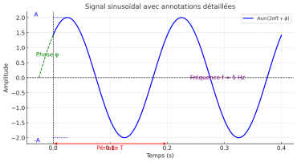

Signal
Définition :
Un signal est la représentation physique de l'information qu'il transporte de sa source à son destinataire. Il constitue un vecteur d'information et se manifeste sous la forme d'une grandeur physique mesurable, telle que le courant, la tension, la force, la température ou la pression. Les signaux sont généralement obtenus à l'aide de capteurs et décrits par des fonctions mathématiques, souvent en fonction du temps x(t) [2].[1]
Exemples de signaux :
Onde acoustique : Sons délivrés par un microphone (parole, musique, etc.).
Signaux biologiques : EEG (électroencéphalogramme), ECG (électrocardiogramme).
Signaux électriques : Tension mesurée aux bornes d'un composant électronique.
Signaux géophysiques : Vibrations sismiques.
Médias visuels : Images et vidéos.
Signaux binaires en informatique : Représentation des informations sous forme de 0 et 1, utilisés dans la transmission de données et le stockage d'informations dans les systèmes numériques (par exemple, les signaux électriques dans les protocoles de communication série et le stockage sur disques durs ou mémoires flash)
Caractéristiques principales d'un signal
a. Amplitude : Elle représente la magnitude ou l'intensité d'un signal à un moment donné. C'est une mesure de la "hauteur" du signal, qu'il s'agisse d'une onde sonore, d'un signal électrique ou d'autres formes physiques.
b. Fréquence : Elle mesure combien de fois une variation ou une oscillation se répète par unité de temps. Elle est exprimée en hertz (Hz) et est inversement proportionnelle à la période du signal. La fréquence est cruciale pour décrire des signaux périodiques, comme ceux associés aux ondes sinusoïdales.
c. Temps : Le temps est un paramètre fondamental pour l'étude des signaux. Il permet de suivre leur évolution et d'analyser comment ils varient au fil des instants. C'est particulièrement pertinent pour les signaux temporels et pour l'analyse de phénomènes dynamiques, tels que dans les systèmes de traitement du signal.
d. Phase : C'est la position relative d'un signal par rapport à un point de référence dans le temps.
e. Forme d'onde : C'est la configuration temporelle du signal, qui peut être sinusoïdale, carrée, triangulaire, etc.
Exemple :

Amplitude : Elle représente l'amplitude du signal, tant positive que négative (+A et -A).
Période : La ligne rouge indique la période T du signal.
Fréquence : La fréquence f, qui est l'inverse de la période f=1/T, est indiquée en violet sur la courbe.
Phase : la ligne pointillée indique l'écart entre le moment où la phase φ du signal commence et l'origine (ou le point de référence) de la phase.